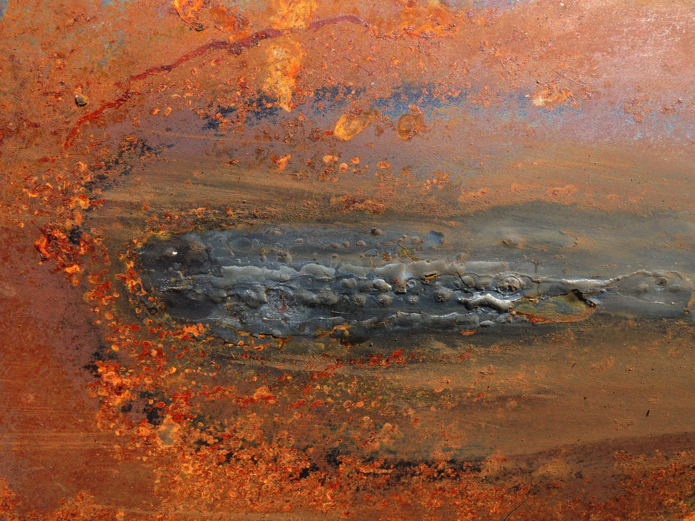

프라세오디뮴·네오디뮴 가격 약세…중희토류는 강보합 유지

국제 희토류 시장에서 경·중희토류와 중·중희토류 간의 가격 흐름이 뚜렷하게 갈리고 있다. 상하이금속시장(SMM) 최신 데이터에 따르면 전기차 모터용 자석의 핵심 소재인 프라세오디뮴-네오디뮴(Pr-Nd) 산화물 가격이 약세를 나타낸 반면, 테르븀(Tb)·디스프로슘(Dy) 등 중희토류는 강보합 흐름을 보였다.
Pr-Nd 가격 약세의 주요 원인은 전기차 시장 성장세 둔화와 비수기 진입이다. 상반기 전기차 생산 확대로 Pr-Nd 수요가 일시적으로 급증했으나, 하반기 들어 완성차 업체들이 재고 소진에 나서면서 신규 발주가 줄었다. 여기에 중국 자석 제조업체들의 생산 속도 조절도 가격 하방 압력으로 작용했다.
반면 테르븀·디스프로슘 등 중희토류는 공급이 구조적으로 제한돼 있어 가격이 견고하게 유지되고 있다. 중희토류는 주로 미얀마에서 생산되는데, 최근 정세 불안으로 광산 공급이 불안정해지면서 가격 지지력이 강하다. 중국 수출통제 강화 조치도 중희토류의 타이트한 수급 상황을 심화시키고 있다.
중국 역외(Ex-China) 희토류 시장 주간 리뷰에 따르면 전반적으로 거래가 부진한 가운데 자본과 정책 변수가 시장을 떠받치는 구조가 형성되고 있다. 각국 정부의 희토류 전략비축 확대와 공급망 다변화 투자가 실수요 부진을 보완하는 역할을 하고 있다.
유럽연합(EU)은 최근 '유럽 희토류 전략'을 통해 동맹국과의 협력을 강화하고 있다. 대서양협의회(Atlantic Council) 분석에 따르면 EU는 캐나다·호주·그린란드 등 우방국과의 핵심광물 파트너십을 통해 중국 의존도를 낮추는 방향으로 정책을 선회하고 있다. 단, 이 전략이 실질적 공급 다변화로 이어지려면 상당한 투자와 시간이 필요하다는 지적도 나온다.
베트남도 희토류 공급망에서 새로운 변수로 떠오르고 있다. 베트남 정치국은 2030년까지 희토류 심층 가공 기술을 자체적으로 확보한다는 목표를 공식화했다. 베트남은 세계 2위 규모의 희토류 매장량을 보유하고 있으며, 단순 채굴에서 벗어나 분리·정제·완제품 소재 제조까지 밸류체인을 확장한다는 계획이다.
국내 희토류 관련 기업들은 이 같은 국제 가격 흐름과 공급망 재편 움직임에 촉각을 곤두세우고 있다. 포스코퓨처엠, 에코프로머티리얼즈 등 소재 기업들은 Pr-Nd계 자석 소재 조달 전략을 재검토 중이며, 가격 하락 구간을 활용한 장기 계약 확대를 검토하는 것으로 알려졌다.
전문가들은 Pr-Nd 가격 약세가 단기적으로는 소재 구매 기업들에 유리하지만, 가격이 지나치게 낮아지면 채산성 악화로 광산 및 정제 업체의 투자가 위축될 수 있다고 경고한다. 희토류 업계 관계자는 '장기적으로는 수요 증가와 공급 제약이 맞물려 다시 가격이 오를 수 있어 지금이 오히려 전략적 재고 확보 타이밍'이라고 말했다.
희토류 자석 시장의 수요는 전기차 외에도 AI 데이터센터용 냉각 팬과 로봇 모터, 방위산업 정밀유도무기 등으로 빠르게 다변화되고 있다. 방위산업 분야에서 네오디뮴 자석은 미사일 추적 장치와 전기추진 체계의 핵심 부품으로, 미국 국방부가 공급망 내재화에 적극 나서는 이유이기도 하다.
한국 지질자원연구원과 KOTRA도 핵심 광물 공급망 위기 대응 협력을 강화하며 희토류 해외 거점 확보에 속도를 내고 있다. 특히 중희토류의 중국 의존도가 99%에 달하는 상황에서 미얀마·마다가스카르 등 공급 다변화 대상 국가에 대한 탐사 협력이 중요한 과제로 부각되고 있다.
시장 전문가들은 단기 가격 양극화가 지속되더라도 중장기 구조는 공급 제약에 무게가 실린다고 본다. 희토류 분리·정제 시설 신규 투자에는 최소 5~7년이 걸리고, 중국 이외 지역의 생산 능력 확충은 예상보다 느리게 진행되고 있다. 이에 따라 희토류 관련 기업들의 장기 공급 계약과 선제적 비축 전략이 더욱 중요해지고 있다.